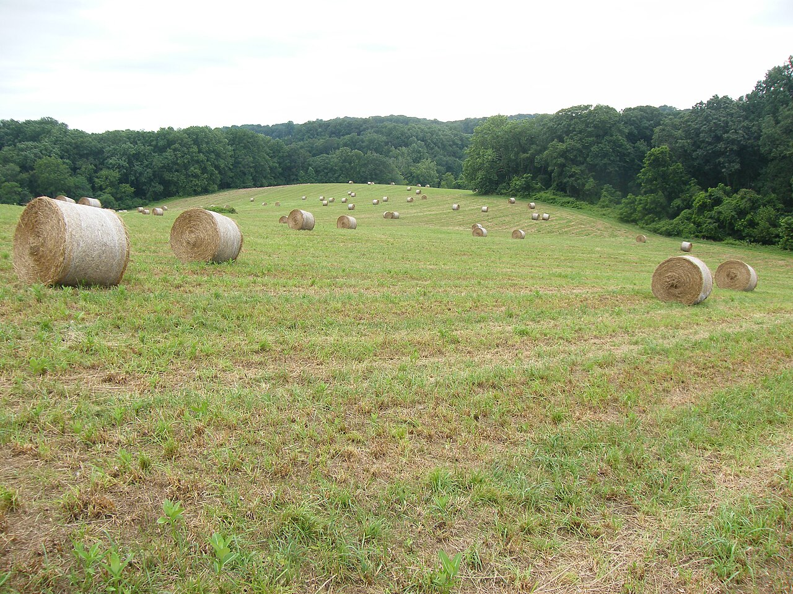

Farm supply / feed / local delivery / Pittsboro, North Carolina
For the field. For the flock.
Feed, farm and pet supplies, with shopping and delivery information on the official store.
Choose a supply path01 / A useful next step
What brings you in?
Take the right route to the official store. This concept does not show live stock, prices or delivery eligibility.
Feed & supplies
Official categories include horse, poultry, livestock, barn/farm, wildlife, lawn/garden and pet supplies.
Continue on the official siteDelivery
Delivery information and ordering already exist on the official site.
Continue on the official sitePoultry
Poultry availability changes; official page says call before visiting and no chick reservations.
Continue on the official site02 / A useful next step
Before you drive.
Check changing details at their source before making plans.
Are chicks available or reserved?
Poultry availability changes; official page says call before visiting and no chick reservations.
Read the business’s own informationHow does delivery work?
Delivery information and ordering already exist on the official site.
Read the business’s own information
VISIT & CONTACT
Real store. Real questions.
Use the business’s own information for current details and availability.
1245 Thompson St, Pittsboro, NC 27312
Store hours Mon–Fri 8–6, Sat 8–3, Sunday closed; phone accepts call/text.
About this concept.
Can I book, order or request a service here?
No. These controls help prepare questions only. Nothing is submitted or reserved. Continue through the business’s official routes for current details.
Are these photographs from the business?
No. The credited contextual photographs illustrate the subject; they do not depict this business, its inventory, staff or completed work.